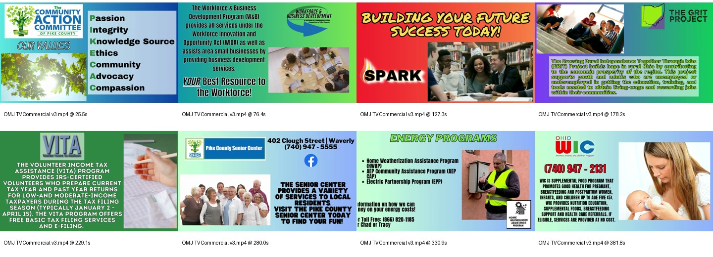

Long-Form Informational Video / Lobby Display
OMJ Commercial / Lobby Loop Video
Collaborated with a mentor on a major update to an OhioMeansJobs lobby-loop commercial showcasing Community Action Committee of Pike County services.

Project Goal
Refresh an existing lobby video so clients could see current, readable, visually engaging information about multiple Community Action programs.
Tools: Stock footage, Video editing/design tools
My Role
- Collaborated with mentor on the major update.
- Updated, replaced, or removed outdated information.
- Preserved useful order/structure from the original version.
- Sourced topic-specific stock footage for section backgrounds.
- Animated screen elements.
- Refreshed graphics and layouts.
- Used high-contrast text colors for readability in a lobby/display environment.
- Completed an approved version that is still in use today.
Process
- Started from an existing core video made by mentor.
- Identified information that needed removed, replaced, or modernized.
- Kept the useful structure while updating visual treatment, footage, animation, and readability.
- Designed with looping lobby playback in mind.
Skills Demonstrated
- Long-form informational video editing
- Lobby/display loop content
- Public service communications
- Multi-program overview design
- Information refresh/update
- Stock footage sourcing
- Motion graphics
- High-contrast readability/accessibility
- Collaborative revision